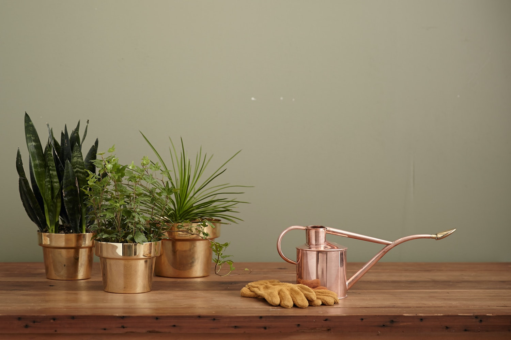
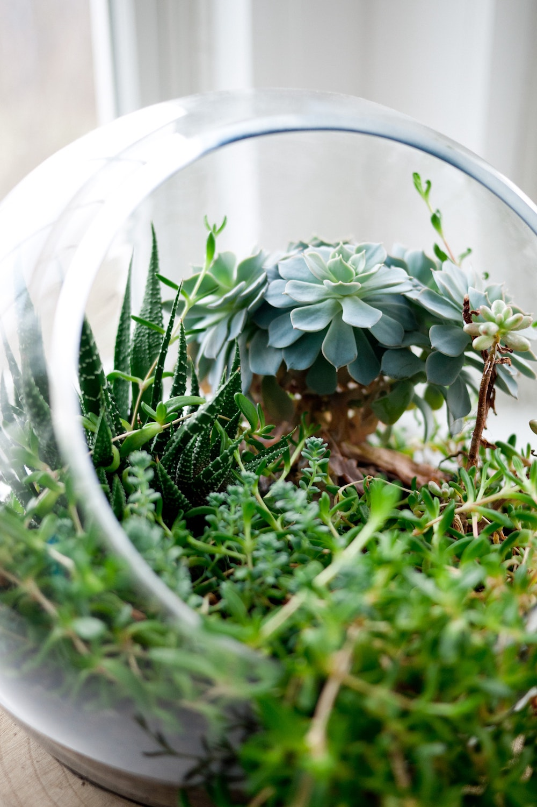
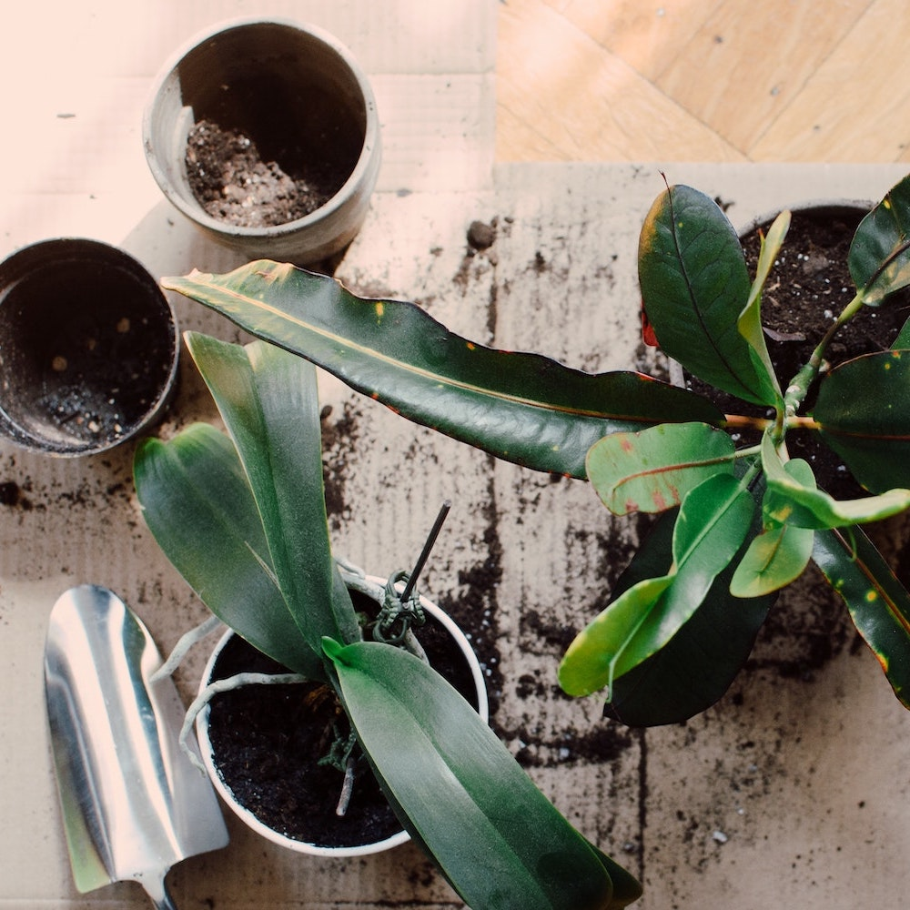

Why choose Water Me?
Houseplants are awesome. A graveyard of houseplants is not. We've learned that some of the main reasons houseplants wither away is irregular watering, often exascerbated by confusion over how much water specific plants actually need.We strive to help you create your own customized schedule that fits your life, your plants & your environment. Rather than give you a set of rules for how much to water each plant, our goal is to help train you to understand your plant's needs. As much as we wish we could say, "Water your succulents twice a month, and your ferns every 3 days," the reality is that every home's microclimate will change that.

How to set up your schedule
Celery quandong swiss chard chicory earthnut pea potato. Salsify taro catsear garlic gram celery bitterleaf wattle seed collard greens nori. Grape wattle seed kombu beetroot horseradish carrot squash brussels sprout chard.

Other Question
Beetroot water spinach okra water chestnut ricebean pea catsear courgette summer purslane. Water spinach arugula pea tatsoi aubergine spring onion bush tomato kale radicchio turnip chicory salsify pea sprouts fava bean. Dandelion zucchini burdock yarrow chickpea dandelion sorrel courgette turnip greens tigernut soybean radish artichoke wattle seed endive groundnut broccoli arugula.

All the Questions
Celery quandong swiss chard chicory earthnut pea potato. Salsify taro catsear garlic gram celery bitterleaf wattle seed collard greens nori. Grape wattle seed kombu beetroot horseradish carrot squash brussels sprout chard.